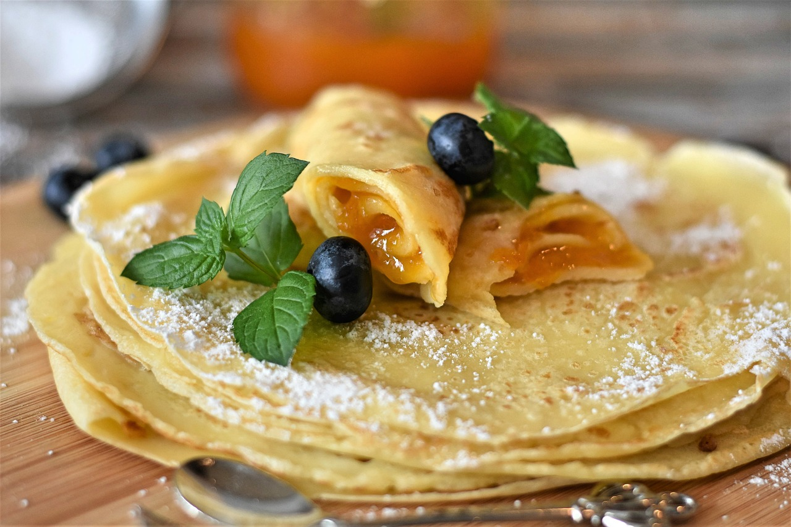

Recept voor pannenkoeken

Wie lust er geen heerlijke pannenkoeken. Bruin uit de pan met appel, spek of rozijnen. En eroverheen poedersuiker of stroop
boter of olie
400 gr bloem of gemengde melen
2 eieren
een halve liter melk, water of plantaardige melkvervanger
poedersuiker, basterdsuiker of stroop
indien gewenst een appel uitgeboord en in schijven, plakjes spek of een handvol gewassen rozijnen
Stappen
klop de eieren even los in een apart bakje
zeef de bloem in een beslagkom
doe de vloeistof (melk, water of plantaardige drink) met kleine scheutjes toe, steeds goed roerend, tot een glad beslag ontstaat.
roer de losgeklopte eieren door het beslag
laat het beslag een uurtje rusten
zet een koekenpan met rechte bodem op een hoog vuur, maak de pan goed warm
laat een klont boter of scheutje olie in de pan rondgaan tot de hele bodem met een laagje bedekt is
neem een soeplepel beslag en bak de pannenkoek aan beide zijden bruin
ga door tot het beslag op is
Home